A note before the stones
This is not a sermon, and it is not a debunking. It is an inventory. Everything you are about to hold has a findspot, a museum, and an accession number, or it has a manuscript shelf-mark, or it has a hostile witness who would have been delighted to say otherwise. Where a piece of evidence is weaker than its reputation, I say so and set it down. Where it is stronger than its reputation, I say that too.
Three habits govern the reading. Ask what no one would have invented. Ask what independent sources say without consulting each other. Ask what the enemies conceded. The rest is patience, and a willingness to be walked somewhere you did not plan to go.
Come with whatever you carry. The stones do not check credentials at the door.
Prologue · Caesarea Maritima · 26–36 CE
Receipts
In the summer of 1961 an Italian team clearing the Roman theatre at Caesarea Maritima lifted a limestone block that had been serving, for sixteen centuries, as a step. Someone in the fourth century had needed a stair and found a monument lying around. They set it face down. That is why the letters survived: PONTIVS PILATVS, cut deep enough to be read by a man who had never expected to be forgotten, protected by the feet of people who had never heard of him.
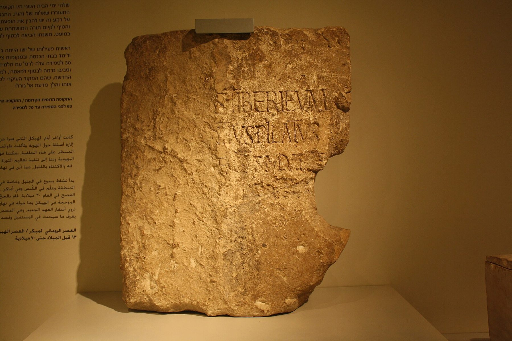
It is a modest object. A dedication of a Tiberiéum, some building in honour of the emperor, from a middling administrator who wanted the credit. It tells us nothing about a trial. It tells us that a man with this name and this title governed this province in the years the Gospels say he did, and that he cared what Rome thought of him. Which is exactly the man the Gospels describe: not a monster, a careerist, weighing a Galilean against a riot on the eve of a festival and finding the arithmetic easy.
Begin here because it is where the method begins. The theatre at Caesarea is a receipt. It says: this happened, in this place, under this man. Before anyone tells you what the Galilean meant, it is worth knowing what can be touched.
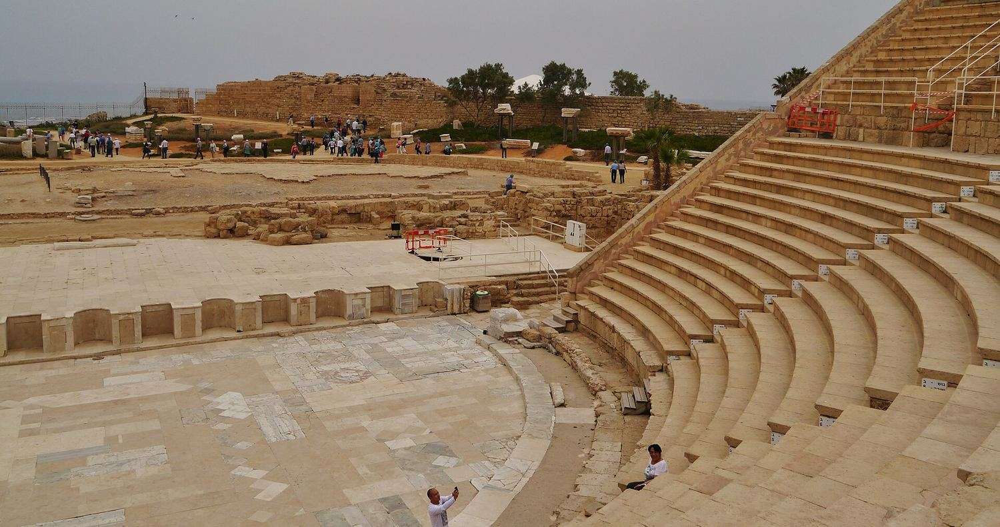
I put three questions to every object in this inventory. Would anyone have invented this? Do sources that did not know each other agree on it? Did the people who hated the movement concede it anyway? An answer of yes to any one of the three is worth more than a shelf of devotional agreement. An answer of yes to all three is bedrock, and there is more bedrock under this story than most people, believing or otherwise, have been told.
I · Jerusalem, the southern necropolis · first century
The Weight of Dirt
In November 1990 a work crew widening a road through the Peace Forest, south of the Old City, broke through the roof of a first-century burial cave. Inside were twelve ossuaries, the limestone boxes into which Jerusalem families gathered the bones of their dead a year after burial, once the flesh was gone. One of them was more beautiful than the others: two rosettes in six-petalled relief, a frame of carved branches, the work of someone paid well. On its narrow end, scratched twice in a careless hand, as if by a relative rather than a craftsman: Yehosef bar Qayafa. Joseph, son of Caiaphas.
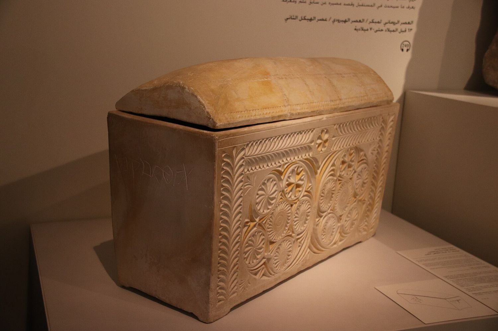
The bones inside belonged to six people, one of them a man of about sixty. Joseph Caiaphas served as high priest from 18 to 36 CE, an unusually long tenure that says something about his skill at managing Roman governors; he and Pilate arrived and departed within a year of each other, and the two men who appear together in the Gospels’ account of one Passover appear together in the record of the province as well. In another ossuary in the same cave, inside a woman’s skull, lay a bronze coin of Herod Agrippa I minted in 42 or 43 CE. A pagan custom, a coin for the ferryman, in the tomb of the high priest’s family. People are never as orthodox as their descendants need them to have been. That, too, is a receipt.
A second box asks for more caution, and I will give it exactly the caution it deserves and no more. In 2002 a collector in Tel Aviv produced an ossuary inscribed Ya’akov bar Yosef akhui d’Yeshua: James, son of Joseph, brother of Jesus. The box is ancient; no one disputes that. The first half of the inscription is very probably ancient. The last two words, the ones that matter, have been argued about for a quarter of a century. The Israel Antiquities Authority called them forged. A Jerusalem court, after seven years of testimony, could not prove it and acquitted the collector, while declining to say the inscription was genuine. That is where the matter rests: unproven either way.
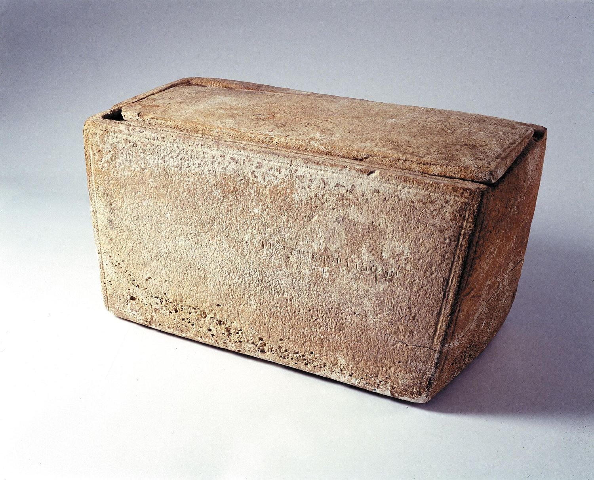
I mention it for one reason. The formula is the interesting part. Of the roughly two thousand ossuaries catalogued from the Jerusalem area, only one other names a brother, and it does so because the brother was the more famous man. To identify a dead James by his brother Jesus, in a city where both names were as common as John and Joseph are now, you would have to be saying: that Jesus. If the words are genuine they are a first-century family pointing at a first-century man. If they are not, the forger understood the first century very well. Either way the box teaches the method: hold it lightly, build on nothing you cannot stand on.
What can be stood on is the roll-call. The Gospels are not set in “once upon a time.” They are set under a named emperor, a named governor, a named high priest, a named tetrarch of Galilee, in named towns. Tiberius is on every silver coin in the province. Pilate is on the step at Caesarea. Caiaphas is in a box in the Israel Museum. Herod Antipas struck bronze at Tiberias, the lakeside capital he built and the Galilean never once, as far as we know, entered. John the Baptist is in Josephus, executed by that same Antipas. James the brother of Jesus is in Josephus too, stoned in 62 CE on the order of a high priest named Ananus. The stage is real. The cast list checks out. Fiction does not work this way, and mythology does not leave receipts.
The stage is real. The cast list checks out. Mythology does not leave receipts.
II · Rome · 64 to c. 200 CE
The Scandal of Survival
Rome kept its own receipts, and it kept them with contempt. In the Laurentian Library in Florence there is an eleventh-century manuscript, copied at Monte Cassino, that carries the only surviving text of the later books of Tacitus’s Annals. On folio 38 the senator, writing around 116 CE, reaches the great fire of 64 and Nero’s search for someone to blame. He found the Christians. Tacitus pauses to explain who they were.
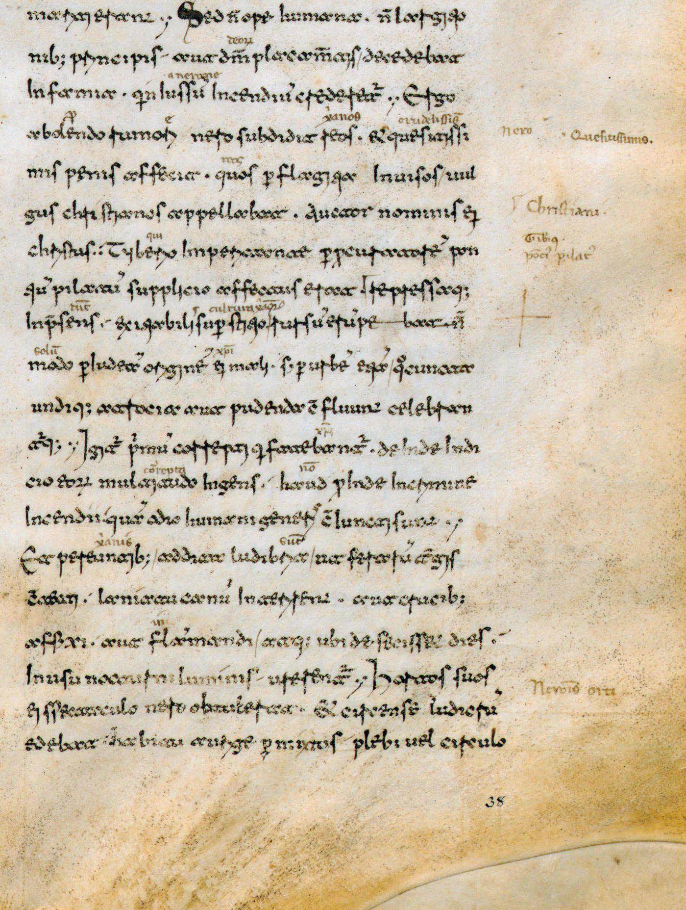
“Christus, from whom the name had its origin, suffered the extreme penalty during the reign of Tiberius at the hands of one of our procurators, Pontius Pilatus, and a most mischievous superstition, thus checked for the moment, again broke out not only in Judaea, the first source of the evil, but even in Rome.”
Tacitus, Annals 15.44, trans. Church and Brodribb
Read it as a historian reads a hostile witness, which is to say gratefully. Tacitus despised these people. He calls their faith a disease and their founder a criminal, and he gets Pilate’s title wrong in the way a Roman of his own generation would. He has no reason on earth to confirm the Christian story. He confirms its skeleton anyway: a man, a name, a province, a governor, an execution under Tiberius, and a movement that should have died with him and did not. Contempt has no motive to flatter. That is what makes it evidence.
Walk uphill from the Forum to the Palatine and the contempt becomes a picture. In 1857 excavators opened a room in the Paedagogium, the school where the imperial household trained its slave boys, and found the plaster scratched with the graffiti of bored adolescents. One of them drew a man on a cross. The man has the head of a donkey. To the left, a smaller figure raises a hand in worship. Beneath, in schoolboy Greek with a spelling mistake: ΑΛΕΞΑΜΕΝΟΣ ΣΕΒΕΤΕ ΘΕΟΝ. Alexamenos worships his god.
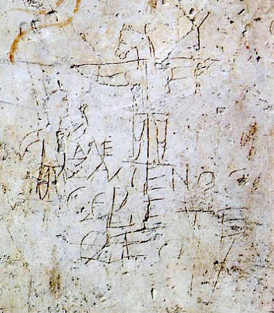
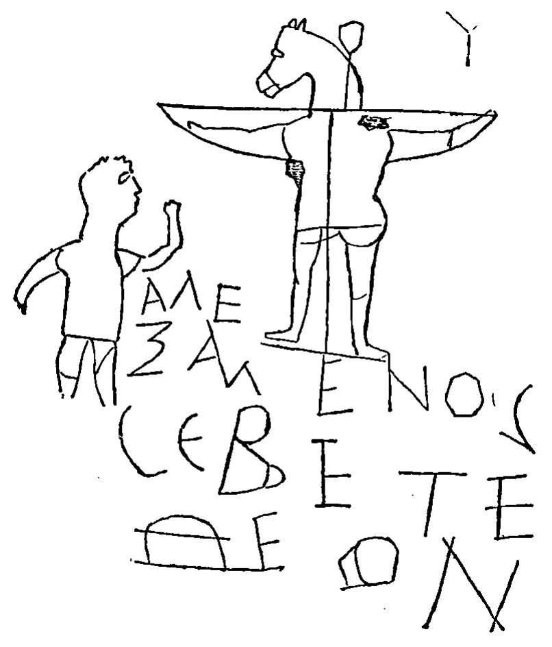
Sit with what the joke requires. By the year 200 a slave in the emperor’s own house could be teased, by other slaves, for worshipping a crucified man, and everyone in the room understood the punchline. The donkey’s head was a standing slur against Jews and Christians. The cross needed no explanation. It was the most shameful object in the Roman world, the penalty for runaways and rebels, so degrading that citizens were exempt from it by law and polite society avoided the word. Cicero told a jury that the very name of the cross should be kept far from a Roman’s body, his thoughts, his eyes and his ears. Josephus called it the most wretched of deaths.
And these people put it at the centre. Not in a footnote, not softened into a martyrdom of the noble kind. Paul, writing in the fifties, calls it a stumbling block to Jews and folly to Gentiles and says he will preach nothing else. No one designing a religion for the Mediterranean market would choose this. You would choose it only if it had happened, and if something afterwards had made the shame impossible to hide and unnecessary to try.
Rome did not kill the Galilean because it was wicked. It killed him because it was orderly. A governor with a festival crowd on his hands, a high priest with a Temple to protect, a legal procedure that worked exactly as designed. The machinery had no category for what stood in front of it, so it processed him under the category it had. That is the frightening sentence, and it has not stopped being true.
The oldest surviving picture of the crucifixion is an insult. Someone in the next room answered it: Alexamenos is faithful.
III · Nazareth and the Sea of Galilee · c. 4 BCE – 30 CE
The Country of the Lake
Leave the museums. Everything that follows was said outdoors, in a small country with a lake at the bottom of it, to people who smelled of fish and were not expected to matter.
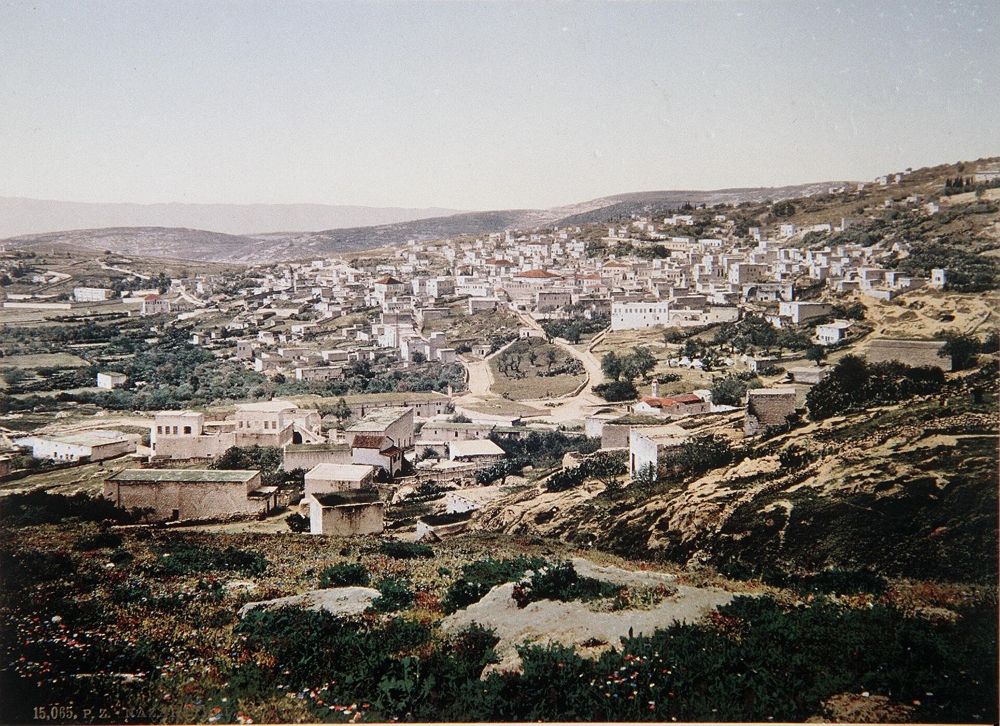
Nazareth was nowhere. That is the first thing to know, and the Gospels do not hide it; they preserve a sneer from the period, can anything good come out of Nazareth?, which no one writing a legend would bother to invent. But nowhere in Galilee was an hour’s walk from somewhere. Six kilometres over the ridge, Herod Antipas was rebuilding Sepphoris into a Greek-speaking capital: colonnades, a market, mosaics, and a construction boom that ran through the whole of the Galilean’s youth. The Gospels call his father a tekton, which is broader than carpenter; a builder, a man who worked wood and stone for wages. A boy from Nazareth with a builder’s hands would have known the road to Sepphoris the way a boy from a Texas hill town knows the road to the county seat, and would have learned there what a city does to a village, and what an empire does to a city.
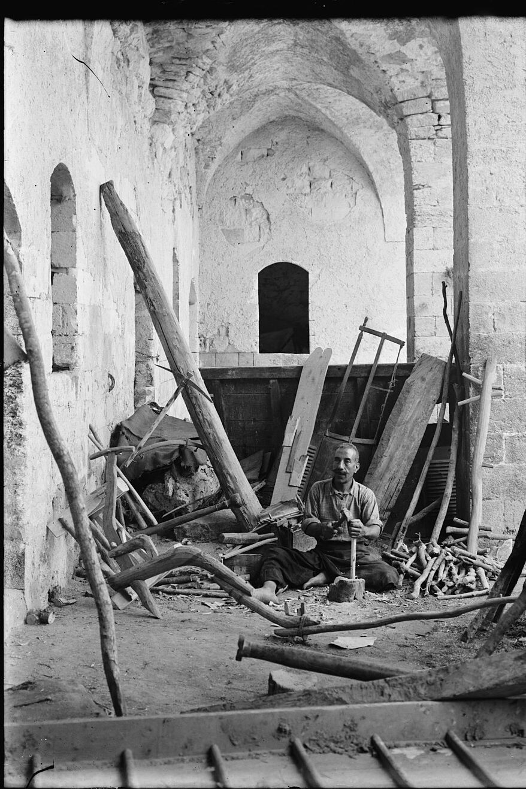
He did not stay. By about the year 28 he was on the north shore of the lake, in Capernaum, a fishing town of perhaps fifteen hundred people on the border between Antipas’s territory and his brother Philip’s. A customs post stood there, which is why a tax collector appears among the first disciples. The lake itself is the reason the story is legible at all. It is twenty-one kilometres long and thirteen wide, two hundred metres below the level of the sea, walled by hills on the east that funnel sudden winds down onto the water. It has always been fished by night, by men in small boats who mend their nets in the morning. When the parables reach for a net, a boat, a catch, a sudden squall, they are not reaching. They are describing the view.
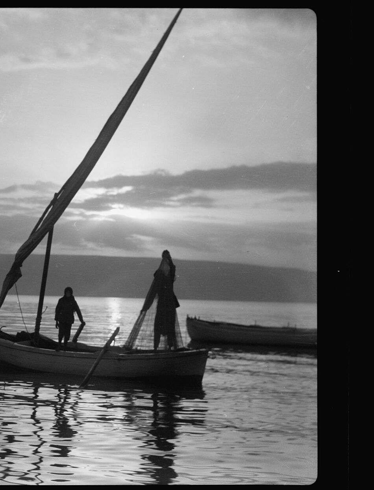
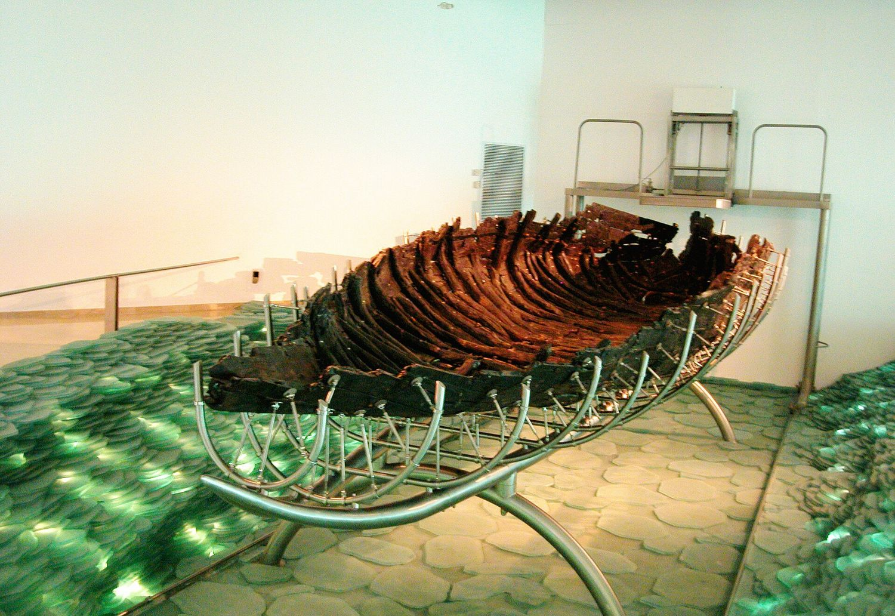
Capernaum has been dug since the Franciscans bought the ruin in 1894. Under the white limestone synagogue that tourists photograph, a building of the fourth or fifth century, the excavators found walls of black basalt: the floor and foundations of the first-century synagogue, the one the Gospels say a centurion paid for and the Galilean taught in. Thirty metres away, an ordinary courtyard house of the same period had been treated strangely by later generations. Its main room was plastered and replastered, scratched with prayers in Greek and Aramaic and Syriac, then enclosed in a church, then in an octagonal church on top of that. Something about that room mattered to people within a few generations of its owner. The Gospels say Simon Peter lived in Capernaum with his mother-in-law. The archaeology says: a fisherman’s house that became a shrine before anyone had the power to make it one.
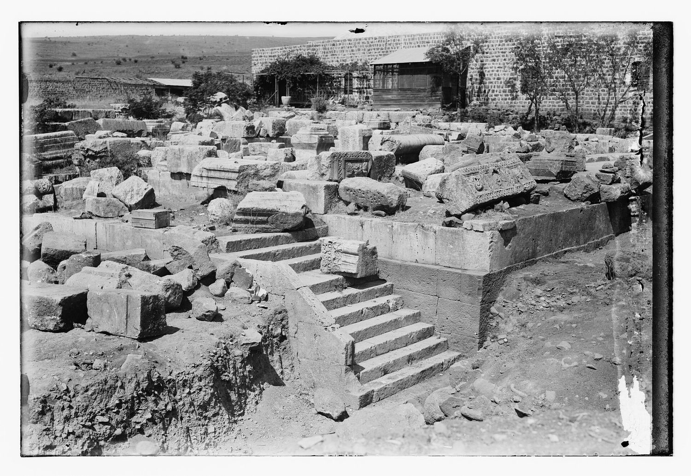
Six kilometres south along the shore, in 2009, a religious order broke ground for a guesthouse at Migdal and, as Israeli law requires, called in the Antiquities Authority first. The salvage dig stopped the building. Under the car park was Magdala: streets, a market, ritual baths, a harbour, and a synagogue of the first century with its benches still in place, its walls frescoed, its floor mosaicked. In the middle of the room sat a carved limestone block about the size of a footstool, and on its face, in relief, a seven-branched menorah standing on a pedestal between two amphorae, with columns and arches around it.
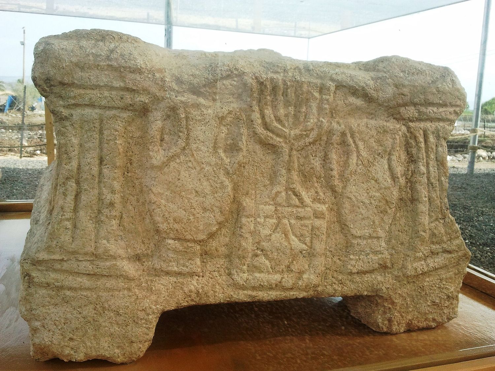
Historians of the last century liked to imagine Galilee as a backwater half detached from Jerusalem, its Judaism thin, its villages open to every passing idea. The Magdala stone ends that argument. In a fishing town of a few thousand people, someone carved the holiest furniture of the Temple into a synagogue stone with a precision that suggests they had stood in the courts and looked. The Galilee the Galilean walked was a Jewish country that faced south, toward the city, toward the festivals, toward the house of God. His quarrel with the Temple, when it came, was a family quarrel. That is why it hurt.
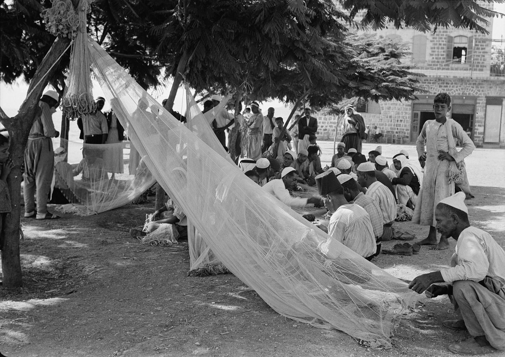
Picture the Sabbath in the basalt room. Fishermen’s hands, the lake on their clothes, children on the stone benches. The reader unrolls Isaiah. A man from Nazareth, not yet thirty-five, known already for saying things no one had said in that room before, stands up to speak. What he says is remembered in the way lake people remember: by shape. The kingdom of God is like a net. Like a seed. Like a woman who has lost a coin and lights a lamp. Like a man who owes more than he can pay and is let off. Not one abstraction in the whole recorded body of his teaching that a child on that bench could not picture.
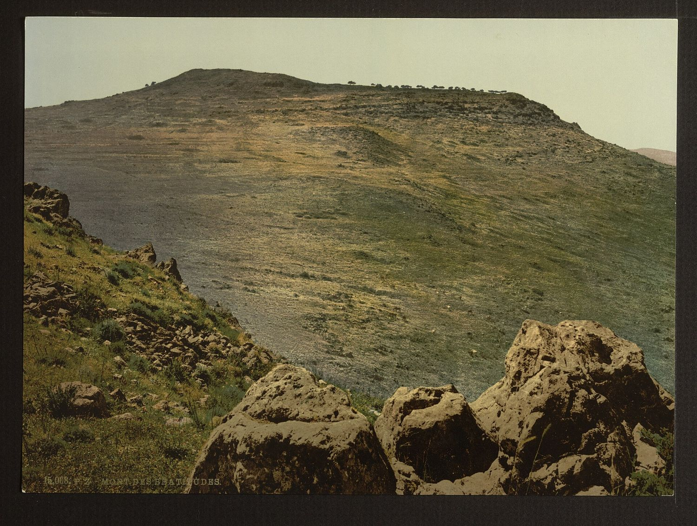
On one of these hillsides, Matthew says, he sat down and taught. What he opened with is the most quoted passage in the language and, I have come to think, the least read. Here it is as it was given.
Blessed are the poor in spirit, for theirs is the kingdom of heaven.
Blessed are those who mourn, for they shall be comforted.
Blessed are the meek, for they shall inherit the earth.
Blessed are those who hunger and thirst for righteousness, for they shall be satisfied.
Blessed are the merciful, for they shall receive mercy.
Blessed are the pure in heart, for they shall see God.
Blessed are the peacemakers, for they shall be called sons of God.
Blessed are those who are persecuted for righteousness’ sake, for theirs is the kingdom of heaven.
Blessed are you when others revile you and persecute you and utter all kinds of evil against you falsely on my account. Rejoice and be glad, for your reward is great in heaven, for so they persecuted the prophets who were before you.
Matthew 5:3–12
Nine sentences. Not one of them is advice. They do not tell the poor to become rich or the mourners to cheer up or the meek to organise. They are not instructions. They are verdicts, delivered in the present tense to people who had never in their lives been told they had won anything, by a man who was about to be counted among the poor, the mourning, the meek, the hungry, the persecuted, and to be shown no mercy at all. Hold that. We will come back to this hillside. Every road in this story does.
IV · Jerusalem · Passover, c. 30 CE
The Money That Condemns
Every spring the country emptied toward the city. Pilgrims came down the Jordan valley from Galilee, past Jericho, and then climbed a thousand metres in a day through the Judaean wilderness to arrive at Passover with the Temple in front of them and the whole apparatus of the festival around them: lambs, money-changers, soldiers, priests, and the particular tension of a holiday that celebrated liberation from an empire, held under an empire. Every coin in every pilgrim’s purse was part of that tension. Two of them matter to this story, and they are usually confused with each other. The record deserves to have them straight.
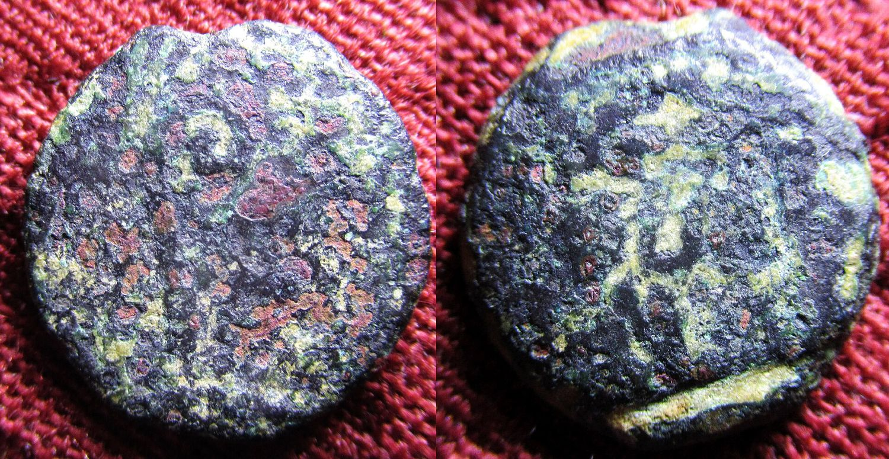
This is the coin the Galilean would have handled as change. It is the coin that tells us who Pilate was: a governor who, given a free hand to design a copper for a touchy province, chose to put the priest’s ladle on it. Philo of Alexandria, who was alive and paying attention, describes him as inflexible, stubborn, and merciless. Josephus records him marching military standards bearing the emperor’s image into Jerusalem by night, and later paying for an aqueduct out of the Temple treasury and beating the protesters with clubs. The prutah is Philo in bronze.
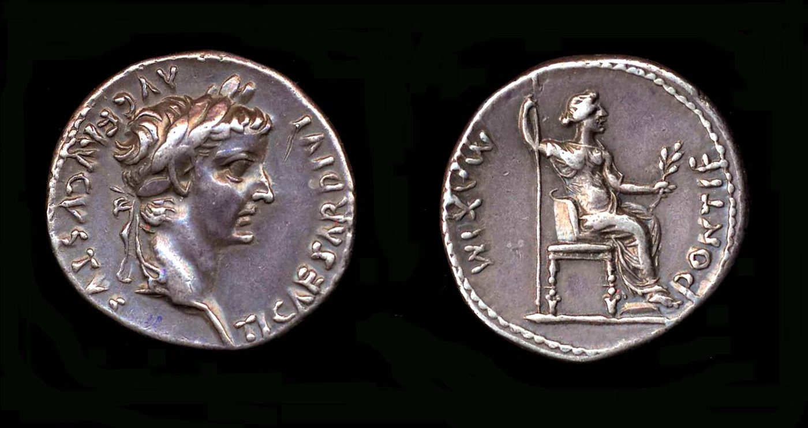
The second coin is silver, and it is the one the Gospels put in his hand. When the question came, is it lawful to pay taxes to Caesar, or not?, it was a trap with two jaws. Say yes and the crowd that had cheered him into the city would hear a collaborator. Say no and Pilate’s men would have their charge before sundown. He asked for a denarius, and someone had one, which was its own small indictment in a Temple court. Then he asked whose likeness and whose inscription it carried. Not a rhetorical question. The likeness was Tiberius, wearing the laurel of a god. The inscription called him the son of a god and, on the other side, the high priest of Rome.
“Whose likeness and inscription is this?” They said to him, “Caesar’s.” Jesus said to them, “Render to Caesar the things that are Caesar’s, and to God the things that are God’s.” And they marvelled at him.
Mark 12:16–17
Every reading of that sentence that makes it a tidy doctrine of church and state has missed what the people in the courtyard heard. They knew what carried God’s likeness and inscription. Their scriptures said so on the first page: the human being, made in the image. He had handed Caesar back his coin and, in the same breath, claimed for God everything that was not stamped with an emperor’s face, which is to say every person standing there, including the ones holding the silver. It is a very small sentence. It gives Caesar a coin and takes back the world.
Pilate would not have understood it. Caiaphas would have understood it perfectly.
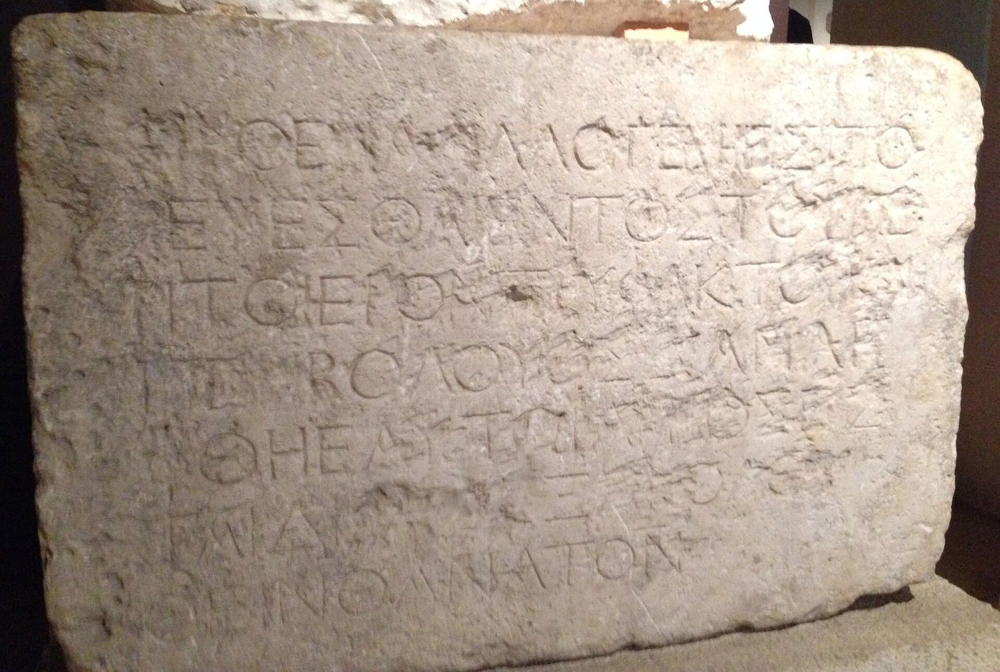
The Temple that spring was the largest sacred enclosure in the Roman world, its platform the size of thirty football fields, its outer wall still rising after fifty years of Herodian construction. It was the one institution in Judaea that Rome could not simply replace, which is why Rome managed it through the high priesthood, and why the high priesthood managed Rome. Into the outer court, during the busiest week of the year, the Galilean walked and overturned the tables of the men who changed pilgrims’ Roman silver into the Tyrian shekels the Temple tax required. Whatever he meant by it, and the sources disagree, the men who ran the place understood it as a threat to the arrangement. From that hour, Mark says, they sought how to destroy him. It is the most historically probable sentence in the week.
V · The texts · read against their own interest
The Grammar of Truth
Before the night comes, a word about how the documents are read, because the night is where the reading gets tested. Historians of the Gospels have one tool sharper than the rest, and it cuts the same way in every archive on earth: people do not invent stories that embarrass their own cause. When a source preserves something awkward, something it visibly struggles to explain, the awkwardness is a fingerprint of memory rather than of design. Watch it work.
The Galilean began his public life by being baptised, in the Jordan, by John, in a rite John himself called a baptism of repentance for the forgiveness of sins. Mark states it flatly. Matthew, a decade or two later, has John protest that it ought to be the other way around. Luke tucks the event into a subordinate clause and hurries past. John’s Gospel never quite says it happened. You can watch four writers become progressively more uncomfortable with a fact none of them felt free to drop. That is not how legends grow. It is how memories are managed.
His own family thought he had lost his mind; Mark says so in as many words, and says his own town would not have him, and that there he could do no mighty work. The disciple the whole later church would build on denied three times, before a servant girl, that he knew the man; all four Gospels keep the scene. Women were the first to find the tomb, in a legal culture that did not accept a woman’s testimony in court, and the men did not believe them; every account keeps that too. And from the cross itself the tradition preserves a cry that no theologian would have chosen to put in the mouth of God’s anointed: My God, my God, why have you forsaken me?
Now hold the oldest piece of the New Testament that exists. It is the size of a credit card. In 1920 the papyrologist Bernard Grenfell bought a lot of scraps in Egypt for the John Rylands Library in Manchester, and in 1934 a young scholar named Colin Roberts, sorting them, recognised a few dozen Greek letters. Both sides written, which means a codex, a book, not a scroll. The hand is early second century. The text is from the eighteenth chapter of John. Of all the words in the New Testament that might have survived on the oldest fragment of it, these are the ones that did.
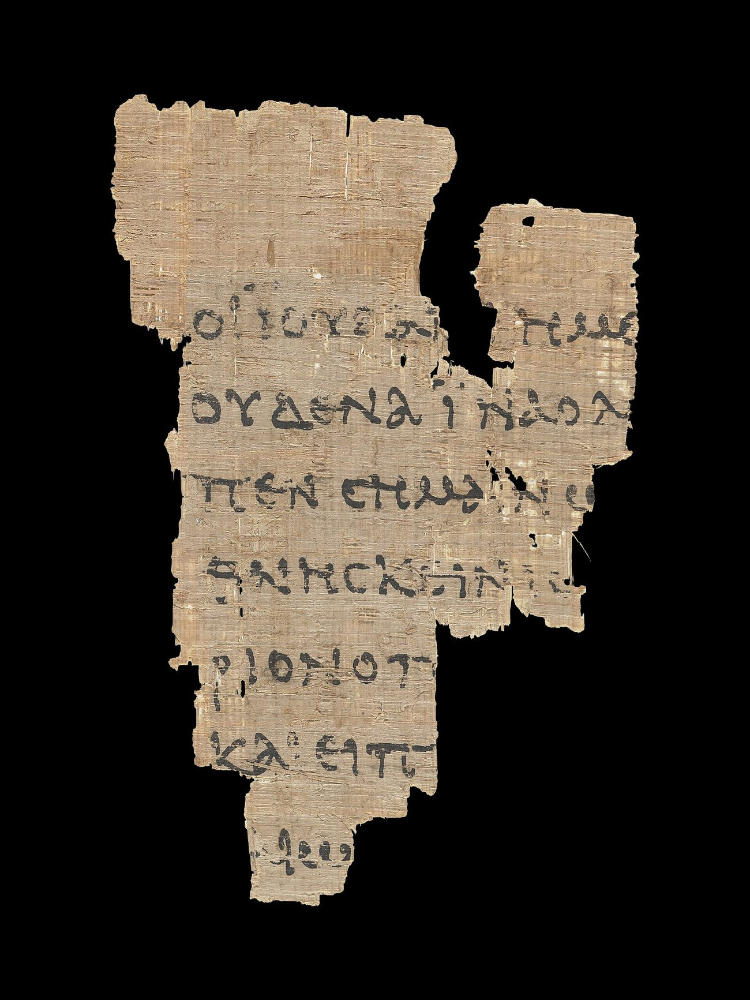
The oldest surviving scrap of the Christian scriptures is a page from a trial, and on it a Roman governor asks a Galilean what truth is and does not stay for the answer. He goes out to the crowd instead. He has a festival to manage. I do not think the accident of survival means anything. I notice that I keep coming back to it anyway, the way you return to a coin left on a table by someone who has gone.
The oldest page we have is a governor asking what truth is, and leaving the room before the answer.
VI · Jerusalem · Thursday night
Thursday Night
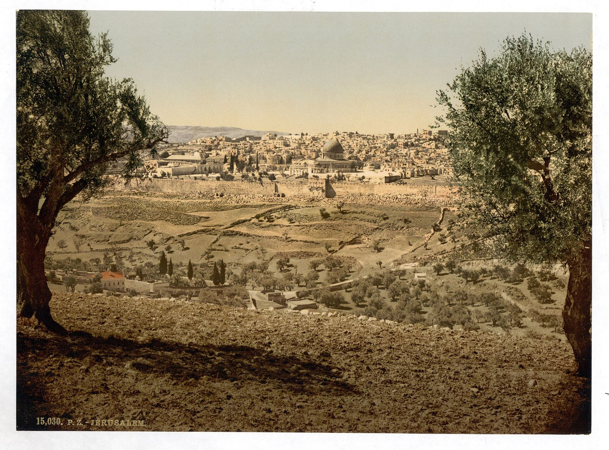
The oldest written account of that night is not in a Gospel. It is in a letter Paul sent to Corinth around the year 55, correcting the manners of a congregation that had turned the shared meal into a scramble. To rebuke them he quotes what he had himself been taught, in the fixed cadence of something recited: the Lord Jesus, on the night when he was betrayed, took bread, and when he had given thanks, he broke it, and said, This is my body. Twenty-five years after the meal, in a Greek port city, the words were already liturgy. Whatever else is uncertain about Thursday, the bread is not.
They ate in the city, in an upstairs room lent by someone whose name the tradition did not keep, and afterward went out through a gate and down into the Kidron. The valley was a cemetery. It still is. On its eastern slope stood the monumental tombs of the Jerusalem rich, cut from the living rock in the century before: the pyramid-topped tomb of the priestly Hezir family, the tall conical monument tourists still call Absalom’s, which was new then, and the rock-cut façades that had prompted his own sharpest line about the pious, that they build the tombs of the prophets and decorate the monuments of the righteous. He walked past them in the dark to a garden across the valley.
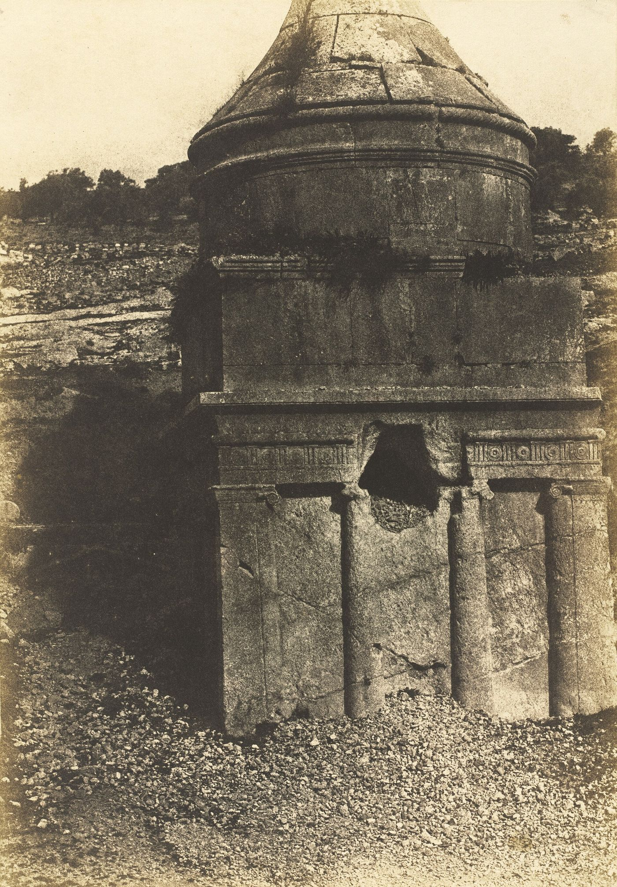
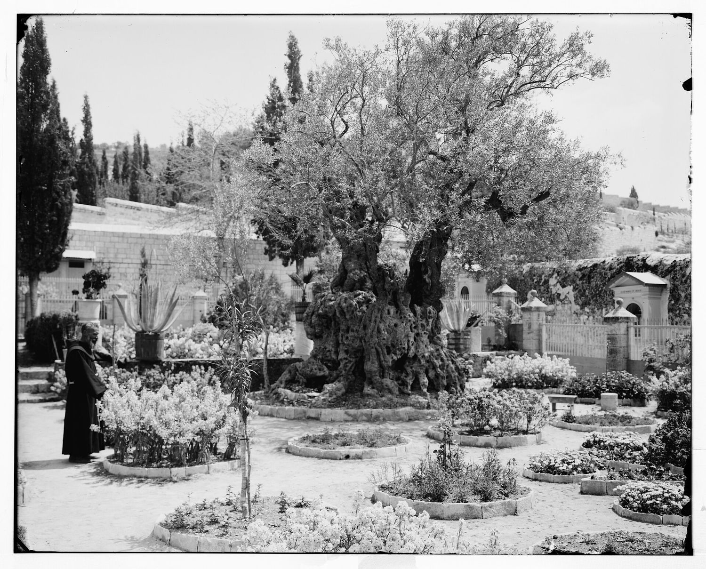
What happened in the garden is reported by the people who slept through it. That is worth noticing. The disciples’ own account of their last night with him is that he asked them to keep watch and they could not, and that when the arrest party came with torches and clubs, one of them swung a sword and cut off a servant’s ear, and then they ran. Nobody burnishes a founding story this way. They kept it because it was what happened, and because, by the time it was written down, the men who had run were the men telling it.
He was taken back across the valley and up to the Upper City, the western hill where the priestly aristocracy lived in houses whose scale the excavations of the 1970s revealed: mosaic floors, painted plaster, stone tables, ritual baths in the basement, a stone weight inscribed with the name of the priestly family of Kathros, still in the ashes of the room where it fell in 70 CE. To one of these houses, Caiaphas’s, he was brought at night for something the Gospels call a trial and historians mostly call a hearing: the high priest and his council establishing, before the governor woke, what charge could be laid that Rome would act on. Blasphemy would not do; Rome did not care. Kingship would. Pilate did not need a theology. He needed a word that meant sedition.
Down in the courtyard, John says, the servants had lit a charcoal fire because the night was cold, and Simon Peter stood at it warming himself. A servant girl looked at him twice. The Greek word for that fire, anthrakia, occurs exactly twice in the New Testament. The second time it is on a beach. We will get there. For now it is enough to say that a fisherman from Capernaum, asked three times if he knew the man, said three times that he did not, and that somewhere in the Upper City, in the last dark before the sky greyed, a rooster crowed.
What happened in the garden is reported by the people who slept through it.
VII · Golgotha · Friday, the third to the ninth hour
The Shadow of the Cross
At first light they took him to Pilate. The governor kept the Passover in Herod’s old palace on the western hill, a fortress of gardens and reception halls that Josephus describes in the tones of a man who has been inside, and it was there, most historians now think, and not at the Antonia fortress the pilgrim route remembers, that the exchange preserved on the Manchester papyrus took place. Are you the King of the Jews? It was the only question that mattered to Rome and the only charge it would kill for. The answers the Gospels record are oblique. Pilate had a crowd, a festival, and a restive priesthood. He had the man flogged, which was procedure, and sent him out to be crucified, which was routine, and wrote the charge on a board to be hung above his head.
Jesus of Nazareth, King of the Jews. In Aramaic, Latin, and Greek, John says, so that every pilgrim could read it. The priests objected to the wording and the governor would not change it. Historians have long noticed that the sign has the exact edge of Roman satire: it is Pilate’s joke, aimed less at the dying man than at the men who had brought him. This is what your king looks like. A church inventing the scene would have written something nobler. The sign is too cruel and too clever to be anything but what a bored provincial official actually ordered painted that morning.
Of what crucifixion did to a body, there is exactly one piece of direct evidence from the ancient world, and it was found by accident in 1968, when bulldozers cutting a road for a housing development north of Jerusalem broke into a family tomb at Giv’at ha-Mivtar. Among the ossuaries was one inscribed Yehohanan. Inside were the bones of a man in his twenties, and through his right heel bone, still, an iron nail eleven and a half centimetres long.
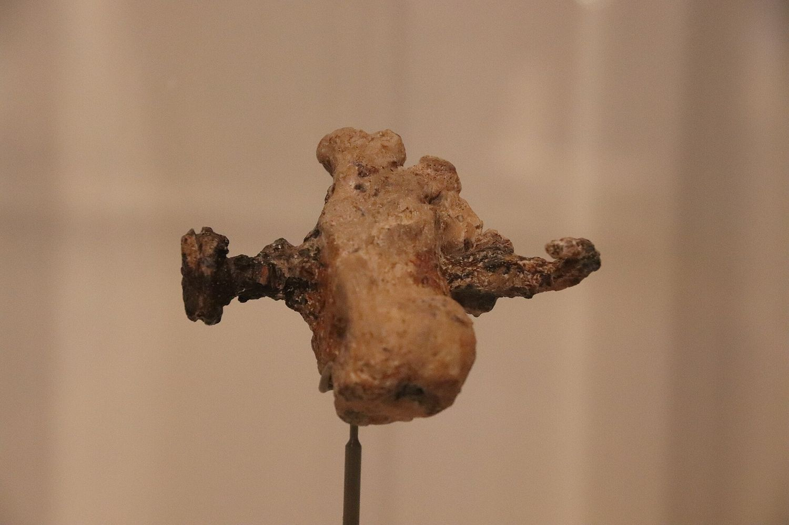
Yehohanan corrects the paintings. There was no standard method, only a template of suspension and a soldier’s improvisation within it: sometimes ropes, sometimes nails, sometimes a small seat, the victim positioned so that breathing itself became the labour that killed him over hours or days. The Gospel writers do not describe the mechanics, and people have wondered why. Yehohanan answers that too. Everyone in Jerusalem had seen it. You did not describe crucifixion to a first-century reader any more than you would describe a car to one now.
He also corrects a modern argument. It has been said that a crucified man in Roman Judaea would have been left for the dogs, and that the Gospel burial is therefore a pious fiction. Yehohanan was crucified in Roman Judaea, in the same generation, and was taken down, laid in his family’s tomb, and a year later gathered with care into a box with his name on it. The Torah required burial the same day; Josephus confirms the Jews of his time took even the crucified down before sunset. The Gospels say a member of the very council that had condemned him, Joseph of Arimathea, asked Pilate for the body and got it. A council member. A detail that shames the council and complicates the story, kept anyway. The three questions return the same answer.
The place was outside the wall, by a road, in a worked-out quarry that had been filled with soil and let out as gardens and, at its edges, cut for tombs. The name was Golgotha, the skull. Mark gives the hours in the Roman way: the third hour, nine in the morning, they crucified him; at the sixth hour, noon, darkness over the land; at the ninth hour he cried out with a loud voice, in Aramaic, the words the tradition kept in his own language because no one dared translate them into something easier.
Eloi, Eloi, lema sabachthani? which means, “My God, my God, why have you forsaken me?”
Mark 15:34
Then he died. The body kept accurate accounts, as bodies do: of the flogging, the nails, the hours. Before sundown, before the Sabbath began, it was taken down, wrapped, and carried a short way to a new tomb cut in the quarry face, and a stone was rolled across the door. The women from Galilee, Mark says, watched where he was laid. Remember that they watched. Everything on Sunday depends on their having known which door.
VIII · A quarry outside the wall · Saturday
The Empty Space
Saturday is the day the sources have nothing to say. The city kept the Sabbath. The disciples were wherever frightened men go. The women waited for the light because the law forbade the work of mourning until it came. History, too, has nothing for Saturday except a door with a stone in it, and it is the door I want to look at before anyone opens it.
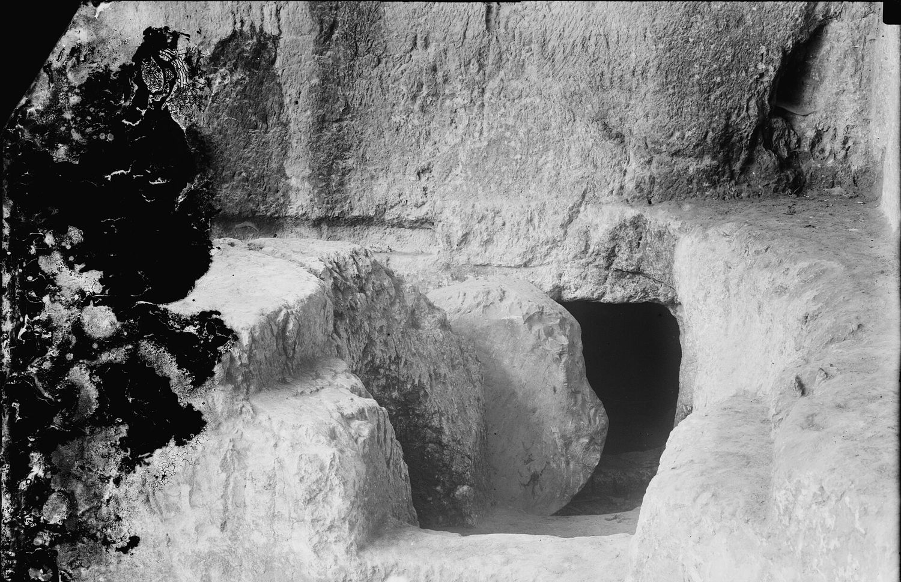
The tombs of first-century Jerusalem are well understood because there are nearly a thousand of them. A low doorway cut into a rock face, closed by a stone; a chamber you could stand in; benches along the walls for the body to lie on while the flesh went; and, cut back into the rock, the narrow shafts called kokhim where the bones were later stored, or the ossuaries with them. Disc-shaped rolling stones like the one above are rare and belonged to the rich; most tombs used a square plug. The Gospels describe a new tomb, hewn from rock, with a stone that had to be rolled, near the place of execution, owned by a man with money. Every one of those details is the kind archaeology can check, and every one checks.
Whether the tomb under the Church of the Holy Sepulchre is the tomb is a different question, and I will answer it as exactly as the evidence allows. The site was a limestone quarry from the eighth century BCE until about the first, then filled with earth and used, as spent quarries were, for gardens and for burials; first-century kokhim tombs are cut into the rock a few metres from the shrine, and one of them can still be crawled into. In the year 30 the place lay just outside the city’s second wall, beside the road to the coast. A decade later Herod Agrippa began a third wall that enclosed it, which means the tradition of the site, if it was invented, would have had to be invented within ten years of the events by people pointing at a place then inside the city and claiming it had been outside. In 135 Hadrian levelled the district and built a temple of Venus over precisely this spot. In 326 Constantine’s engineers took the temple down, dug through Hadrian’s fill, and found, Eusebius says, against every expectation, a tomb.
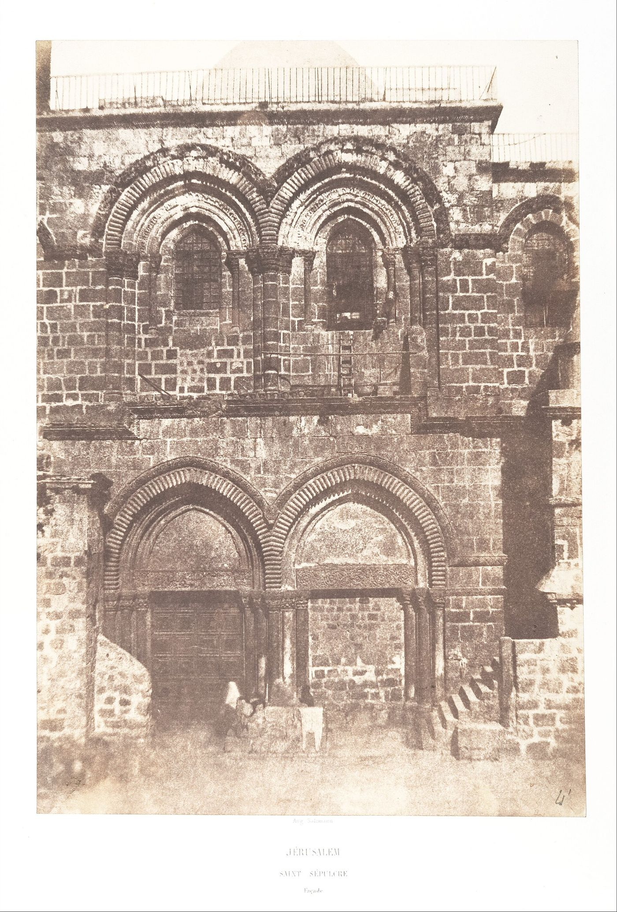
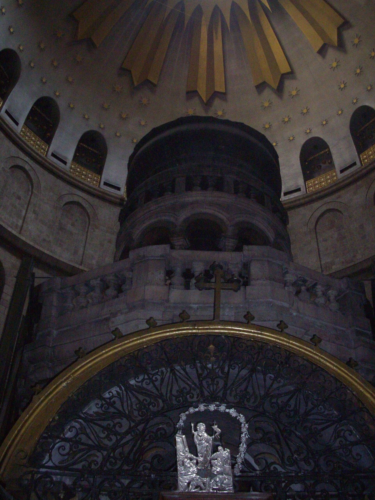
None of this proves the bench under the marble is the bench. It proves that the place is the right kind of place, that the first Christians of Jerusalem located it there within living memory, that Rome thought the memory dangerous enough to bury under a temple, and that the shrine now standing is continuous with the one built when the memory was three centuries old. In an inventory that is a great deal. It is not everything, and I will not pretend it is.
What the door cannot tell us, the enemies can. The earliest argument against the resurrection that survives is preserved by Matthew, who writes it down so that he can answer it: his disciples came by night and stole him away. A century later Justin Martyr reports Jewish emissaries still telling the same story in the synagogues of the diaspora. Tertullian, around the year 200, mocks a version in which the gardener moved the body to protect his lettuces. Every hostile explanation on record is an explanation of an empty tomb. Not one ancient opponent, in any surviving text, says the simplest thing: the body is right there, go and look. In a city that could produce the bones of Caiaphas and the heel of Yehohanan, that silence has weight.
It also has a limit, and I have reached it. History can walk you to the door of the tomb. It can date the mortar, measure the stone, and tell you who was standing there and what they said afterward. It cannot go in. Neither could they. The women came to a door in the dark and found it open, and everything that follows, for them and for anyone since, begins not with an argument but with a decision about what to do next.
Every hostile explanation on record is an explanation of an empty tomb.
IX · The garden · Sunday, before sunrise
The First Day
And very early on the first day of the week, when the sun had risen, they went to the tomb.
Mark 16:2
Mark, the earliest and plainest of the four, sets the scene in a single sentence and then does something no propagandist would do: he ends his book eight verses later with the women running away in terror, having told no one. For they were afraid. That is where the oldest manuscripts stop. Later scribes, unable to bear it, added endings. The original is a door left open, which is either the clumsiest conclusion in ancient literature or the most honest. Three women, one of them from the fishing town with the carved menorah, went to a tomb with spices to finish a burial that Friday had rushed. They were worrying, on the walk, about the stone.
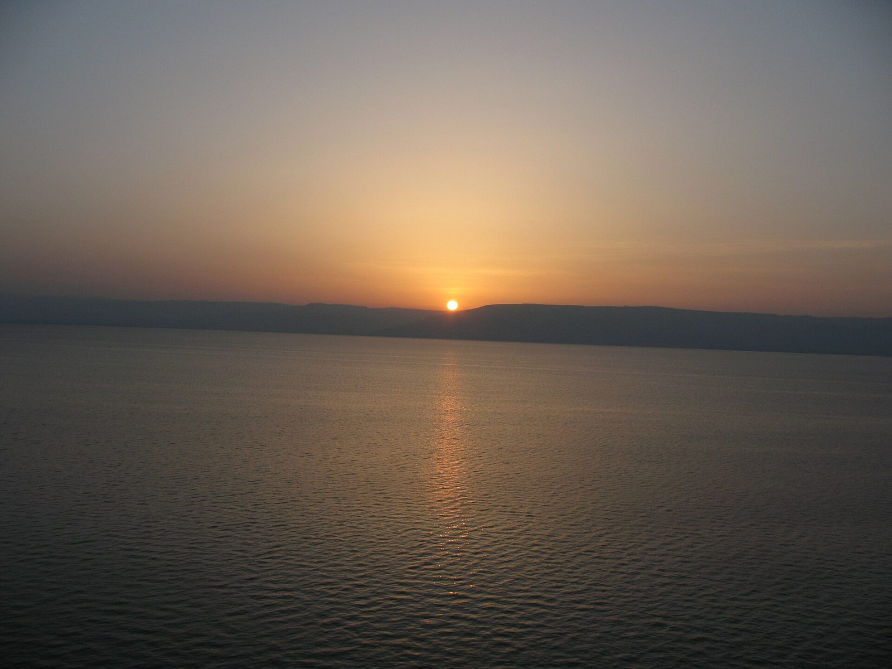
Turn from the Gospels to the oldest document of all. Around the year 55, Paul reminded the Corinthians of what he had been taught when he was himself taught, some twenty years earlier: a formula, in the fixed and balanced clauses of something learned by heart, that he says he received and passed on. Scholars who agree on very little agree that this is the earliest Christian text we possess, and that it was already old when Paul learned it in the mid thirties, within a handful of years of the crucifixion, from the people who had been in Jerusalem that week.
For I delivered to you as of first importance what I also received: that Christ died for our sins in accordance with the Scriptures, that he was buried, that he was raised on the third day in accordance with the Scriptures, and that he appeared to Cephas, then to the twelve. Then he appeared to more than five hundred brothers at one time, most of whom are still alive, though some have fallen asleep. Then he appeared to James, then to all the apostles. Last of all, as to one untimely born, he appeared also to me.
1 Corinthians 15:3–8
Most of whom are still alive. That is not the voice of legend. It is the voice of a man citing witnesses in a dispute, naming the ones his readers could write to. Cephas is Peter under his Aramaic name, which means the formula was composed in Aramaic before it was Greek, in Jerusalem, among people who called him that. James is the brother who had thought him mad. Paul is the persecutor. The list is not a list of believers. It is a list of people who had every reason not to be.
Here the historian faces a puzzle of the first order, and it is not the one usually named. Whether a dead man can live is not a question the tools of history can answer; they were not built for it, and it is no dishonour to a spade that it cannot weigh a soul. The question history can ask is narrower and harder to escape. Movements built on a messiah die with him. Judas the Galilean, whose revolt gave the region its reputation, died in 6 CE and his following scattered. Theudas was beheaded and forgotten. The Egyptian, Simon bar Giora, Bar Kokhba: Rome killed them and their movements evaporated, every one, within months, as such things do. This one did the opposite. Within weeks its leaders were preaching in the city that had executed him, to crowds that included the men who had arranged it. Within three years its fiercest persecutor had joined it on a road to Damascus and would spend the rest of his life being beaten for it, five times with the thirty-nine lashes by his own count, before Rome killed him too. Within thirty years the brother who had thought him mad was leading the Jerusalem church and being stoned for it on the order of a high priest; Josephus, who was in the city, records it without sympathy. Within eighty years a Roman governor in Bithynia was writing to the emperor for guidance about people who met before dawn to sing to Christ as to a god.
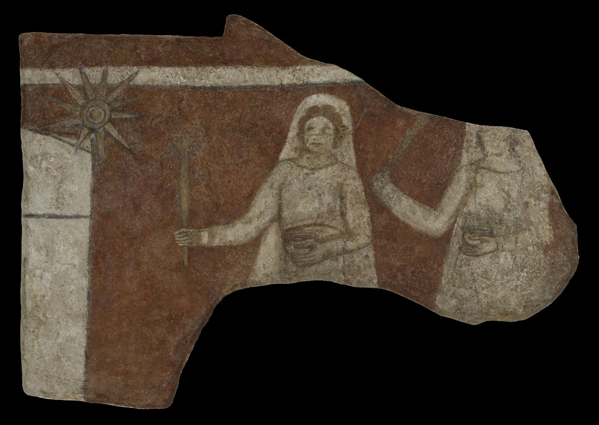
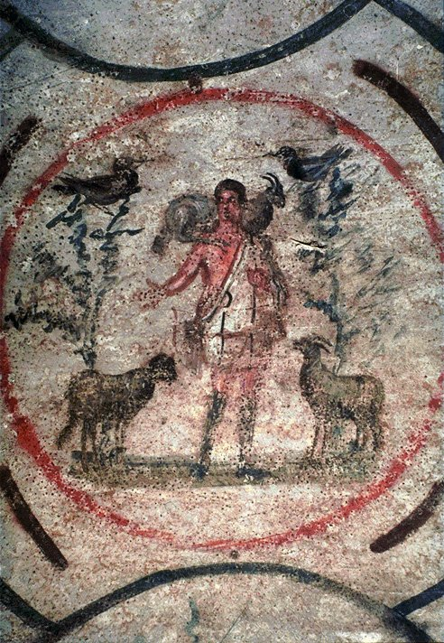
Something happened. That sentence is as far as the method goes and it is further than most people think. A historian is not obliged to say what happened in the garden. A historian is obliged not to pretend that nothing did. Terrified fugitives became public witnesses in the most dangerous city on earth for them to do it in, and stayed witnesses under torture, and did not, in any record we have, recant. Their explanation of themselves was simple and they never varied it: they had seen him. I am not going to tell you what they saw. I am going to tell you that the evidence for their having been transformed is as solid as the evidence for the theatre at Caesarea, and that every alternative account of the transformation I have read over twenty years has required more faith than theirs.
X · The road to Emmaus, and back · Sunday
The Road Out of the City
Luke keeps a story the others do not, and it is the one I have come to think the whole inquiry was walking toward. On the Sunday afternoon two of the followers left Jerusalem. Not the famous ones; one is called Cleopas and the other is not named at all. They were going to a village called Emmaus, seven miles out, which is to say they were going home, or somewhere that was not the city where the thing had failed. A stranger fell in with them on the road and asked what they were discussing. They told him. Their summary of the week is the most honest sentence in the New Testament.
But we had hoped that he was the one to redeem Israel.
Luke 24:21
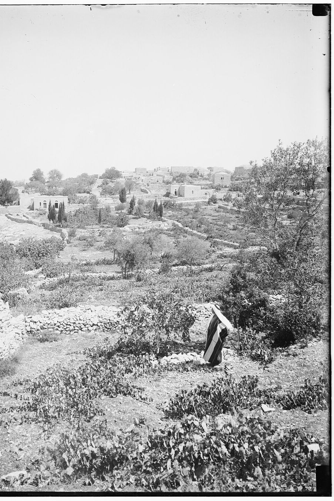
We had hoped. Past tense. They were walking away from a grave, and the stranger walked with them, and, Luke says, beginning with Moses and all the Prophets he opened the Scriptures to them as they went, and they did not know him. That is the second honest thing. They had followed him for months and did not know his face. At the village they pressed the stranger to stay, because it was evening, and at the table he took the bread and blessed it and broke it and gave it to them, and in that gesture, not in the argument, they knew him, and he was gone.
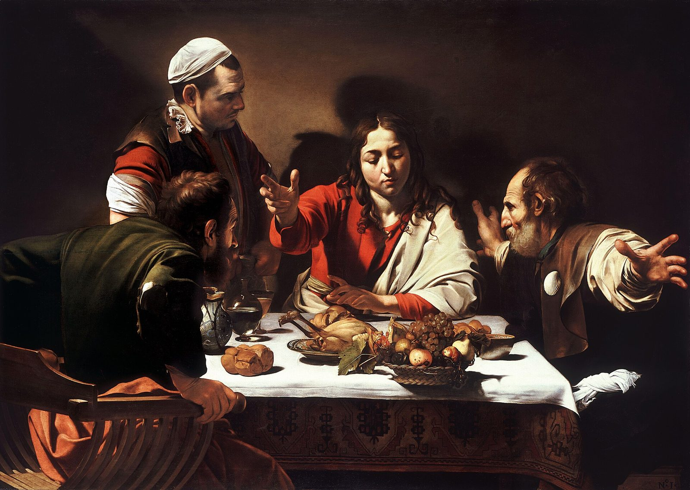
They said to each other, “Did not our hearts burn within us while he talked to us on the road, while he opened to us the Scriptures?” And they rose that same hour and returned to Jerusalem.
Luke 24:32–33
Seven miles back, in the dark, on the road they had just walked in the other direction. That is the shape of the story, and once you have seen it you see it everywhere in the record. It is the shape of the first word he ever said in public. Mark gives it: the kingdom of God is at hand; repent. The Greek is metanoeite, and English has made it a word about feeling sorry. The Hebrew underneath it, the word every prophet had used, is shuv. Turn around. Come back. Return to me and I will return to you, Malachi had written. The first thing the Galilean asked of anyone was not to advance. It was to turn.
Now go back to the hillside, because I said every road in this story does, and read the nine sentences again.
Blessed are the poor in spirit, for theirs is the kingdom of heaven.
Blessed are those who mourn, for they shall be comforted.
Blessed are the meek, for they shall inherit the earth.
Blessed are those who hunger and thirst for righteousness, for they shall be satisfied.
Blessed are the merciful, for they shall receive mercy.
Blessed are the pure in heart, for they shall see God.
Blessed are the peacemakers, for they shall be called sons of God.
Blessed are those who are persecuted for righteousness’ sake, for theirs is the kingdom of heaven.
Matthew 5:3–10
Each sentence has two halves, and the halves do different work. The first half names people: the poor, the grieving, the meek, the hungry for justice, the merciful, the clean-hearted, the peacemakers, the persecuted. It points. It is a direction, and it is the direction most of the modern world learned from him without remembering where. The hospital, the orphanage, the conviction that the weak have a claim on the strong and that the stranger is owed something, the flinch you feel when the poor are mocked: that flinch was learned on this hillside, and people who have not been inside a church in thirty years still feel it. It is right that they do. It is his.
But the sentence does not stop at the comma, and a direction is not a destination. Read the second halves alone and listen to what they are. Theirs is the kingdom: the exiles given back the land. They shall be comforted: Isaiah’s word to a people coming home from Babylon. They shall inherit the earth: the thirty-seventh Psalm, the meek receiving what was promised and lost. Satisfied: the hunger of the wilderness ended. See God: face to face, the oldest of the losses, undone. Called sons: the name a father uses for a child who has come back through the door. Every promise in the nine is a homecoming. Not one of them is a frontier. He never told anyone to move forward. He told them the kingdom had come near, and to turn around.
There is a way of reading these sentences that hears only the first half and builds a politics on it, and it is not wrong; it is half. There is a way of reading them that hears only the second half and builds a comfort on it, and that is half too. The sentence is whole only when the direction and the return are held in one hand, and the one hand that has ever held them both together is the hand that broke the bread at Emmaus. Progress that has forgotten where home is becomes motion. Return that has forgotten the poor becomes nostalgia. He offered neither. He offered the road out of the city and the road back, walked the same evening, by the same two people, changed.
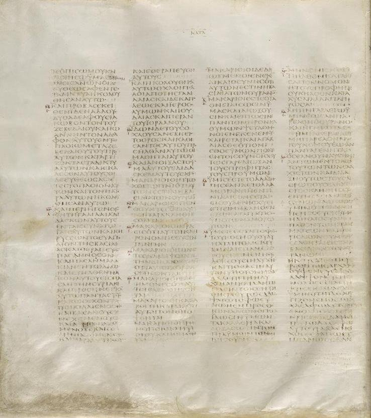
He told the story of the return himself, and Luke kept that too. A younger son asks for his inheritance early, which in that world was a way of wishing his father dead, and takes it to a far country, and spends it, and ends up feeding pigs and envying them. But when he came to himself, Luke says, using the plainest possible words for the thing that happened, he decided to go home and work as a hired man. Then the line that Rembrandt spent his last years painting.
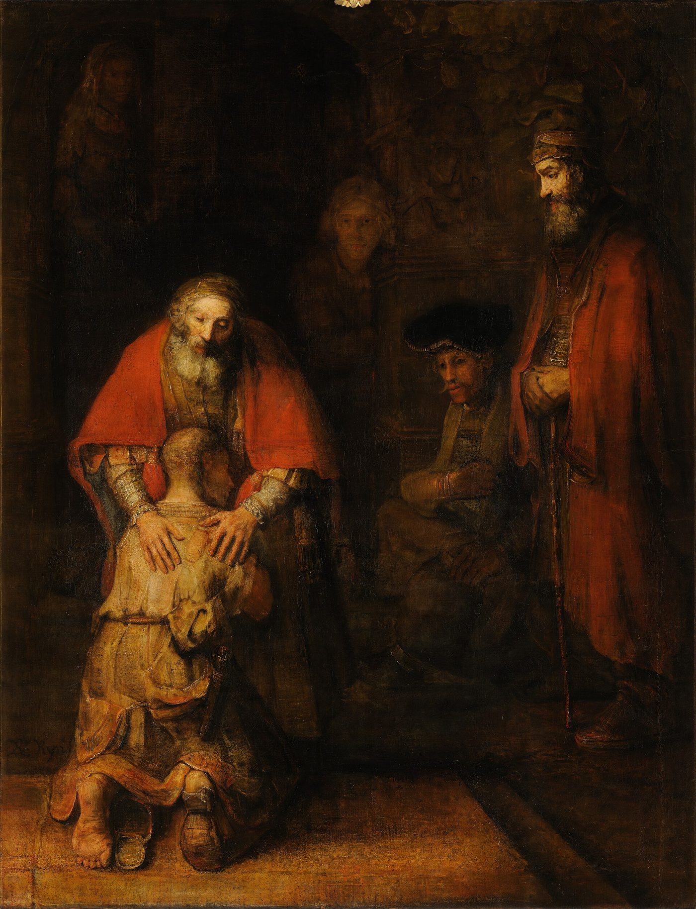
And he arose and came to his father. But while he was still a long way off, his father saw him and felt compassion, and ran and embraced him and kissed him.
Luke 15:20
The father runs. Apply the historian’s test to that detail. In the villages of Galilee a man of standing did not run; it was undignified, it hitched up the robe, it was what children and servants did. The people on the hillside would have laughed at the picture, and then stopped laughing. Nobody inventing a god would make him run. The story ends, like Mark’s Gospel, with a door: the elder son standing outside the party, his father come out to plead with him, and no verse to tell us whether he went in. The Galilean did not finish his stories. He left them open at the place where the listener had to decide.
And the story itself, the whole of it, ends by turning around. He is going before you to Galilee, the young man at the tomb tells the women in Mark, there you will see him. Not Jerusalem, not Rome. Back to the lake. John’s last chapter puts the fishermen in a boat at night on the water they grew up on, catching nothing, and a stranger on the shore at daybreak, and when they come in, a charcoal fire. Anthrakia. The second time the word appears. Simon Peter, who had warmed his hands at the first one while he said three times that he did not know the man, is asked three times at the second one whether he loves him, and three times says yes, and is given back his work. The story does not end at a grave. It ends at breakfast, on a beach, at sunrise, with the man who had failed worst being fed first.
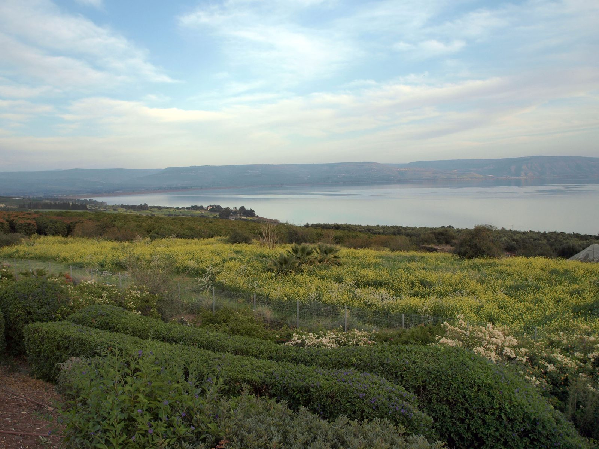
Progress that has forgotten where home is becomes motion. Return that has forgotten the poor becomes nostalgia. He offered the road out of the city and the road back, walked the same evening.
XI · The inventory, totalled
The Evidence Converges
Stand back and total the inventory. What follows is not what believers hold or sceptics grant; it is what the working consensus of historians of the period, Jewish and Christian and neither, has arrived at after two hundred years of trying very hard to disagree. Where the consensus is thinner I have said so. Where the question is not a historical question at all I have said that too. The last row is the one usually labelled “disputed.” Nobody disputes it. It is simply not the kind of thing the method can settle.
- A Jew called Yeshua lived in Galilee in the early first centuryVirtual unanimity
Tacitus and Josephus, neither friendly, settle it without help from the Gospels.
- He was born around 6–4 BCE and raised in NazarethStrong consensus
The birth stories are contested. The Nazareth origin is too embarrassing to be invented and too well attested to drop.
- He was baptised by JohnStrong consensus
Four writers visibly uncomfortable with a fact none felt free to omit. Josephus confirms John.
- He taught in parables, gathered disciples, and was known as a healer and exorcistStrong consensus
Even hostile rabbinic tradition credits the wonders, and blames sorcery.
- He caused a disturbance in the Temple court at PassoverMajority view
Mark and John, independently; it is the likeliest trigger for the arrest. A few dissent.
- He was crucified on the order of Pontius Pilate, c. 30 CEVirtual unanimity
Tacitus, Josephus, Paul, all four Gospels, the Talmud. The stone at Caesarea supplies the prefect.
- He was buried in a rock-cut tomb by Joseph of ArimatheaMajority view
A minority argues crucified men went unburied. Yehohanan of Giv’at ha-Mivtar was buried, and re-buried, with care.
- Women followers found the tomb empty on the SundayMajority view
Attested by all four Gospels and presupposed by the earliest hostile explanation, which is theft, not presence.
- His followers had experiences they took to be appearances of him aliveVirtual unanimity
That they had them is not in doubt; scholars who agree on nothing else agree on this. The creed in 1 Corinthians 15 is within five years of the events.
- The movement survived his death and spread across the Roman worldHistorical fact
Pliny, Tacitus, the Alexamenos graffito, the catacombs, Dura-Europos.
- What emptied the tombBeyond the method
Not disputed. Not that kind of question. The historian walks you to the door and stops, and says so.
Notice what the consensus is made of. Details that embarrassed the people preserving them. Facts attested by sources that had not read each other. Concessions extracted from witnesses who wished the whole thing away. Tacitus, with access to the archives of the Senate, confirms the execution under Pilate. Josephus, who had no love for messiahs, mentions the man, the brother, and the followers who were still around in the nineties and had not dispersed. The Babylonian Talmud, hostile throughout, remembers a Yeshua hanged on the eve of Passover for sorcery and leading Israel astray. Pliny reports the pre-dawn hymns. A Roman schoolboy draws the donkey on the cross. Even the enemies agreed on the skeleton. The argument was never about whether. It was about what it meant.
Here, then, is history’s verdict, and it is not a hedge. A Jewish teacher from a village no one had heard of lived, taught with an authority that his own family found alarming and his enemies found intolerable, died on a Roman cross as a public joke, and started something that did not stop. It is customary to end an inquiry like this by saying that whatever happened in the tomb, call it resurrection or call it the power of an idea, either way we are left with a mystery. I decline the custom. There is no either way at a door. The women did not stand outside it weighing hypotheses. They went in, and came out, and ran.
“He comes to us as One unknown, without a name, as of old, by the lakeside, He came to those men who knew Him not. He speaks to us the same words: ‘Follow thou me!’ and sets us to the tasks which He has to fulfil for our time. He commands. And to those who obey Him, whether they be wise or simple, He will reveal Himself in the toils, the conflicts, the sufferings which they shall pass through in His fellowship, and, as an ineffable mystery, they shall learn in their own experience Who He is.”
Albert Schweitzer, The Quest of the Historical Jesus, 1910
Epilogue
Morning
I walk early, before the day has an audience, in a park in Texas that is not the Galilee and does not pretend to be. The light comes up over live oaks instead of the Golan, and no one is fishing, and the only stone underfoot is limestone laid down in a sea that dried before there were hills to see it from. It is enough. The sun does not argue. It rises, and everything that was grey turns out to have had a colour the whole time.
This inquiry began with what could be touched, and it has not stopped touching. The letters at Caesarea are exactly what they were in 1961, and in the year they were cut. The lake is a lake. The heel bone is in a drawer in Jerusalem with a nail through it. What changed, over the year I spent taking this inventory, is the hour I read them in, and I have come to think that the hour does more of the reading than the reader likes to admit. In the cold light of the museum a stone is a receipt. Walk with it through a whole day and it becomes a door. Same stone.
That is all I will say about it. It is the kind of thing a man says once, in a colophon, and then goes outside.
Read the nine sentences again. Then again. Then, if you can, before the light, stand somewhere the day has not been sold yet and watch what the women watched. Every road in this story went out from the city in the dark and came back the same night, walked by people who had hoped, past tense, and then simply hoped. The stones are where they were. So is the road back.
The sun had risen.
Inventory of sources
Objects
- The Pilate Stone. Caesarea Maritima, 1961. Israel Museum, Jerusalem. Frova, A., “L’iscrizione di Ponzio Pilato a Cesarea,” Rendiconti dell’Istituto Lombardo 95 (1961).
- The Caiaphas ossuary. Peace Forest, Jerusalem, 1990. Israel Museum. Greenhut, Z., “The ‘Caiaphas’ Tomb in North Talpiyot,” and Reich, R., “Ossuary Inscriptions from the ‘Caiaphas’ Tomb,” ‘Atiqot 21 (1992).
- The “James” ossuary. Provenance unknown; private collection. Inscription contested; IAA report 2003; State of Israel v. Golan, verdict 2012.
- The Alexamenos graffito. Paedagogium, Palatine Hill, 1857. Antiquarium of the Palatine, Rome.
- Codex Laurentianus Mediceus 68.2 (Tacitus, Annales 11–16). Biblioteca Medicea Laurenziana, Florence.
- The Caesarea inscription of the priestly courses, 1962 (earliest non-Christian mention of Nazareth). Avi-Yonah, M., Israel Exploration Journal 12 (1962).
- The Sea of Galilee boat. Ginosar, 1986. Yigal Allon Centre. Wachsmann, S., The Sea of Galilee Boat (1995).
- Capernaum: the basalt synagogue and the insula sacra. Corbo, V. and Loffreda, S., Franciscan excavations 1968–.
- The Magdala Stone and synagogue. Migdal, 2009. Avshalom-Gorni, D. and Najar, A., Hadashot Arkheologiyot 125 (2013); Aviam, M., Novum Testamentum 55 (2013).
- Bronze prutot of Pontius Pilate (29/30–31/32 CE) and the denarius of Tiberius (“tribute penny”), various collections; the illustrated denarius from the Portable Antiquities Scheme.
- Rylands Library Papyrus P52 (Gr. P. 457). Roberts, C. H., An Unpublished Fragment of the Fourth Gospel (1935); on the date, Nongbri, B., Harvard Theological Review 98 (2005).
- The Temple Warning (Soreg) inscription, 1871. Istanbul Archaeology Museums.
- The crucified man of Giv’at ha-Mivtar, 1968. Haas, N., Israel Exploration Journal 20 (1970); Zias, J. and Sekeles, E., “The Crucified Man from Giv‘at ha-Mivtar: A Reappraisal,” Israel Exploration Journal 35 (1985).
- The Church of the Holy Sepulchre. Biddle, M., The Tomb of Christ (1999); Moropoulou, A., et al., on the 2016–17 restoration and OSL dating of the Edicule mortars, Journal of Archaeological Science: Reports 19 (2018).
- The Nazareth Inscription, excluded. Harper, K., et al., “Establishing the provenance of the Nazareth Inscription,” Journal of Archaeological Science: Reports 30 (2020).
- The olives of Gethsemane. Bernabei, M., “The age of the olive trees in the Garden of Gethsemane,” Journal of Archaeological Science 53 (2015).
- Jerusalem tombs. Kloner, A. and Zissu, B., The Necropolis of Jerusalem in the Second Temple Period (2007).
- Codex Sinaiticus. British Library, Add MS 43725. Dura-Europos baptistery paintings, Yale University Art Gallery. Catacomb of Priscilla, Rome.
Ancient witnesses
- Paul, letters (c. 50–60 CE), especially 1 Corinthians 11:23–26 and 15:3–8; Galatians 1:18–19.
- The Gospel of Mark (c. 65–75); Matthew and Luke (c. 80–90); John (c. 90–100).
- Josephus, Antiquities 18.63–64, 18.116–119, 20.200; Jewish War 2.169–177, 4.317, 7.203.
- Philo, Embassy to Gaius 299–305.
- Tacitus, Annals 15.44 (c. 116). Pliny the Younger, Letters 10.96–97 (c. 112).
- Cicero, Pro Rabirio 16. Justin Martyr, Dialogue with Trypho 108. Tertullian, De spectaculis 30.
- Babylonian Talmud, Sanhedrin 43a. Eusebius, Life of Constantine 3.25–28.
- Scripture quotations are from the English Standard Version.
Scholarship
- Allison, Dale C. The Resurrection of Jesus: Apologetics, Polemics, History. London: T&T Clark, 2021.
- Bauckham, Richard. Jesus and the Eyewitnesses. 2nd ed. Grand Rapids: Eerdmans, 2017.
- Brown, Raymond E. The Death of the Messiah. 2 vols. New York: Doubleday, 1994.
- Charlesworth, James H., ed. Jesus and Archaeology. Grand Rapids: Eerdmans, 2006.
- Crossan, John Dominic. The Historical Jesus. San Francisco: HarperSanFrancisco, 1991.
- Dunn, James D. G. Jesus Remembered. Grand Rapids: Eerdmans, 2003.
- Ehrman, Bart D. Did Jesus Exist? New York: HarperOne, 2012.
- Evans, Craig A. Jesus and the Ossuaries. Waco: Baylor University Press, 2003.
- Fredriksen, Paula. Jesus of Nazareth, King of the Jews. New York: Knopf, 1999.
- Hengel, Martin. Crucifixion in the Ancient World and the Folly of the Message of the Cross. Philadelphia: Fortress, 1977.
- Levine, Amy-Jill. The Misunderstood Jew. San Francisco: HarperSanFrancisco, 2006.
- Meier, John P. A Marginal Jew. 5 vols. New York: Doubleday / New Haven: Yale, 1991–2016.
- Reed, Jonathan L. Archaeology and the Galilean Jesus. Harrisburg: Trinity Press International, 2000.
- Sanders, E. P. The Historical Figure of Jesus. London: Penguin, 1993.
- Schweitzer, Albert. The Quest of the Historical Jesus. Trans. W. Montgomery. London: A. & C. Black, 1910.
- Vermes, Geza. Jesus the Jew. Philadelphia: Fortress, 1973.
- Wright, N. T. The Resurrection of the Son of God. Minneapolis: Fortress, 2003.
Images
Every photograph on this page is an archival or museum image, reproduced under the licence noted. Nothing here was generated by a machine. Early in the day the photographs are shown in monochrome; colour is withheld until the ninth station. The map is drawn from Natural Earth public-domain data.
- Pontius Pilate Inscription.JPG · BRBurton · CC0
- Caesarea maritima Römisches Theater 8.JPG · Zairon · CC BY-SA 4.0
- Limestone Ossuary of "Joseph Son of Caiaphas" Jerusalem, 1st Century AD (41409261800).jpg · Gary Todd from Xinzheng, China · CC0
- JamesOssuary-1-.jpg · Paradiso · Attribution
- Florence, Biblioteca Medicea Laurenziana Ms Codex Laurentianus Mediceus 68 II fol. 38r Tacitus, Annales, xv 44.3–8 Mention of Christians.jpg · Unknown authorUnknown author · public domain
- Alexorig.jpg · Unknown authorUnknown author · public domain
- Graffito d'Alexamenos.jpg · Anonyme (reproduction du graffito d'Alexamenos) · public domain
- Nazareth photographed by Felix Bonfils.jpg · Félix Bonfils · public domain
- Nazareth carpenter LOC matpc.03181.jpg · Matson Collection · public domain
- Jerusalem to Galilee via Samaria. Lake of Galilee. (Fishing boat at sunrise) LOC matpc.21997.jpg · Matson Collection · public domain
- Ancient Sea of Galilee Boat 1st Century AD at Yigal Allon Centre Ginosar Israel.jpg · Ywpark2003 Prof. Yong Woo Park · CC0
- Ruins of Capernaum LOC matpc.10654.jpg · Matson Collection · public domain
- Magdala Stone (4).jpg · Hanay · CC BY-SA 3.0
- Galilee trip. Tiberias fisheries (Arab). Fishermen mending their nets LOC matpc.20766.jpg · Matson Collection · public domain
- The Mount of Beatitudes, (i.e., Capernaum, Israel)-LCCN2001699269.jpg · Photochrom Print Collection · public domain
- Prutah Of Pontius Pilate.jpg · John D. Casnig · CC BY-SA 4.0
- Tiberius, R6195, BMC 49.jpg · Portable Antiquities Scheme from London, England · CC BY 2.0
- Jerusalem Temple Warning Inscription.jpg · oncenawhile · CC BY-SA 3.0
- Carrying off the Menorah from the Temple in Jerusalem depicted on a frieze on the Arch of Titus in the Forum Romanum.JPG · Laurel Lodged · public domain
- Manchester, John Rylands Library Ms Greek P 457 (Papyrus 52) recto John 18, 31-33.jpg · Unknown authorUnknown author · public domain
- From the Mount of Olives, general view, Jerusalem, Holy Land-LCCN2002725017.jpg · unknown · public domain
- Auguste Salzmann, Absalom's Tomb, Valley of Kidron, Jerusalem, 1854, NGA 92336.jpg · Auguste Salzmann · CC0
- Jerusalem (El-Kouds). Old olive tree in Garden of Gethsemane LOC matpc.06704.jpg · Matson Collection · public domain
- Nail & Heel Bone Only Known Evidence of Crucifixion, Jerusalem, 1st C. AD (29347803498).jpg · Gary Todd from Xinzheng, China · CC0
- Jerusalem (El-Kouds). Rolling Stone, Tombs of the Kings LOC matpc.07506.jpg · Matson Collection · public domain
- Jérusalem, Saint Sépulcre, Façade MET DP131300.jpg · Auguste Salzmann / Louis Désiré Blanquart-Evrard · CC0
- 'Edicule'of 'church of Holy Sepulchre'. the tomb of Christ.jpg · Rudolph.a.furtado · public domain
- Sunrise over Sea of Galilee 0810 (508230201).jpg · James Emery from Douglasville, United States · CC BY 2.0
- Baptistery wall painting, Procession of women - YDEA - 34496.jpg · anonymous · CC0
- Good shepherd 01.jpg · unknown · public domain
- Emmaus LOC matpc.08765.jpg · Matson Collection · public domain
- Supper at Emmaus-Caravaggio (1601).jpg · Caravaggio · public domain
- Codex Sinaiticus Matthew 4,19-5,22.JPG · Unknown authorUnknown author · public domain
- Rembrandt Harmensz van Rijn - Return of the Prodigal Son - Google Art Project.jpg · Rembrandt · public domain
- View of the Sea of Galilee from the Mount of the Beatitudes.jpg · Obendorf · CC0


.jpg){kind=link}


_LOC_matpc.21997.jpg){kind=link}


.jpg){kind=link}
._Fishermen_mending_their_nets_LOC_matpc.20766.jpg){kind=link}
-LCCN2001699269.jpg){kind=link}


_recto_John_18,_31-33.jpg){kind=link}


._Old_olive_tree_in_Garden_of_Gethsemane_LOC_matpc.06704.jpg){kind=link}
.jpg){kind=link}
._Rolling_Stone,_Tombs_of_the_Kings_LOC_matpc.07506.jpg){kind=link}


.jpg){kind=link}


.jpg){kind=link}